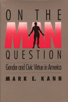

<body bgcolor="#FFFFFF" text="#000000" link="#0000FF" vlink="#CC0000" alink="#CC0000"><center><hr width="350" size="1" align="center" noshade>Male individualism conditioned with a strong dose of civic virtue<hr width="350" size="1" align="center" noshade><p><a href="https://cdcshoppingcart.uchicago.edu/Cart/ChicagoBook.aspx?ISBN=9780877228073&&PRESS=temple" target="_top">Buy this book!</a> | <a href="https://cdcshoppingcart.uchicago.edu/Cart/Cart.aspx?PRESS=temple" target="_top">View Cart</a> | <a href="https://cdcshoppingcart.uchicago.edu/Cart/Cart.aspx?PRESS=temple" target="_top">Check Out</a></p><p></p></center><!--none//--><h1>On the Man Question</h1>
<H2>Gender and Civic Virtue in America</H2>
<h3>Mark E. Kann</h3>
<P>cloth 0-87722-807-8 $61.50, Apr 91, <FONT COLOR=#990033>Out of Stock Unavailable</FONT>
<br>Electronic Book 1-43990-404-9 $62.50 <FONT COLOR=#990033>Out of Stock Unavailable</FONT>
<BR> 352 pp
</P><p>Focusing on Seventeenth-Century English political philosophy and Nineteenth-Century American culture, Mark Kann challenges the widely-held view that American political institutions are grounded in the primacy of individualism. Liberal thinkers have long been concerned that men are too passionate and selfish to exercise individual rights without causing social chaos. Kann demonstrates how a desperate search to answer the man question began to revolutionize gender relations He examines "the other liberal tradition in America" which downplays the value of individualism, elevates the ongoing significance of an "engendered civic virtue," and incorporates classical republicanism into the fabric of modern political discourse.
<p>The author traces the cultural conditioning of the white middle class that produced the ideal of self-sacrificing wives whose lives were devoted to creating a haven for their husbands and a school of virtue for their sons. Upon leaving home, these young men were to be schooled in manliness in the military in order to be capable of assuming positions of power as they were vacated by their fathers’ generation. Thus, in the norms of fatherhood, fraternity, womanhood, and militarism, the male’s individualism was conditioned with a strong dose of civic virtue.
<BR>&nbsp;<h2>Contents</h2><P>
<p>Preface
<br>Introduction: Individualism, Civic Virtue, and Gender
<p><b>Part I: English Origins</b>
<br>1. On the Man Question
<br>2. On the Woman Question
<br>3. On the Youth Question
<p><b>Part II: Locke's Legacy</b>
<br>4. Fathers and Sons
<br>5. Citizens and the State
<br>6. Women and Warriors
<p><b>Part III: Engendered Virtue</b>
<br>7. In Search of Fathers
<br>8. In Search of Fraternity
<br>9. The Keepers of Civic Virtue
<br>10. Martial Virtue
<p>Conclusion: Fortune Is a Man
<br>Notes
<br>Index
</P><BR>&nbsp;<H2>About the Author(s)</H2>
<table><tr><td valign="top"><img src="/tempress/authors/729_au.gif" height="90" width="75"></td><td width="100%" valign="middle"><p><b>Mark E. Kann</b> is Professor of Political Science and Associate Dean of Graduate Studies at the University of Southern California. Among his other publications are three titles with Temple University Press, including <I><a href="386_reg.html" target="_top">Middle Class Radicalism in Santa Monica</a></I>.</P></td></tr></table>
<BR><H2>Subject Categories</H2>
<p><A HREF="/tempress/political.html" TARGET="_top">Political Science and Public Policy</a>
<BR><A HREF="/tempress/gender.html" TARGET="_top">Gender Studies</a>
</p>
<p align="center"><a href="https://cdcshoppingcart.uchicago.edu/Cart/ChicagoBook.aspx?ISBN=9780877228073&&PRESS=temple" target="_top">Buy this book!</a> | <a href="https://cdcshoppingcart.uchicago.edu/Cart/Cart.aspx?PRESS=temple" target="_top">View Cart</a> | <a href="https://cdcshoppingcart.uchicago.edu/Cart/Cart.aspx?PRESS=temple" target="_top">Check Out</a></p><p><font face="Arial" size="1"><a href="copyright.html" onMouseOver="window.status='Web Copyright Policy';return true;" onMouseOut="window.status=''" title="Web Copyright Policy">&copy;</a> 2015 <a href="http://www.temple.edu" target="new" onMouseOver="window.status='Link to Temple University home page';return true;" onMouseOut="window.status=''" title="Link to Temple University home page">Temple University</a>. All Rights Reserved. http://www.temple.edu/tempress/titles/729_reg.html</font></p>